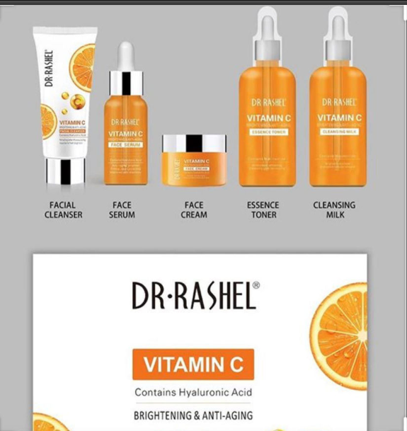
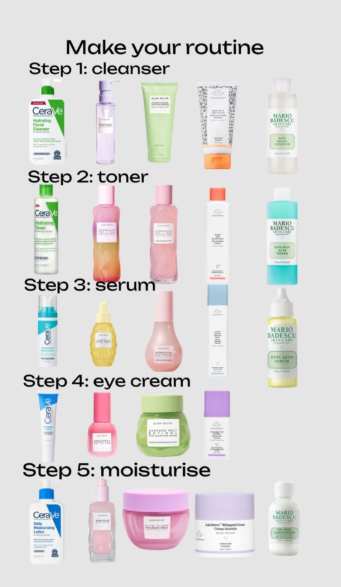

Why Skincare Routines Matter
Taking care of your skin is more than vanity—it's about health, confidence, and prevention. A consistent skincare routine helps maintain a healthy, glowing complexion while addressing common issues like acne, dryness, and signs of aging. It's a simple investment in yourself!
Daily Skincare Steps for Beginners
- Cleansing: Wash away impurities and oil buildup.
- Exfoliating: Remove dead skin cells for a smoother texture.
- Moisturizing: Hydrate your skin to prevent dryness.
- Sun Protection: Use SPF to shield your skin from harmful UV rays.
My Top Tips

Stick to products that match your skin type, and don't forget to stay hydrated. Remember, consistency is the key to seeing results over time!And also don't forget about using natural remedies too.
Book a Consultation
If you're looking for personalized advice, I'm here to help! Book Us Now to discuss your skincare goals and get started on the path to radiant skin.